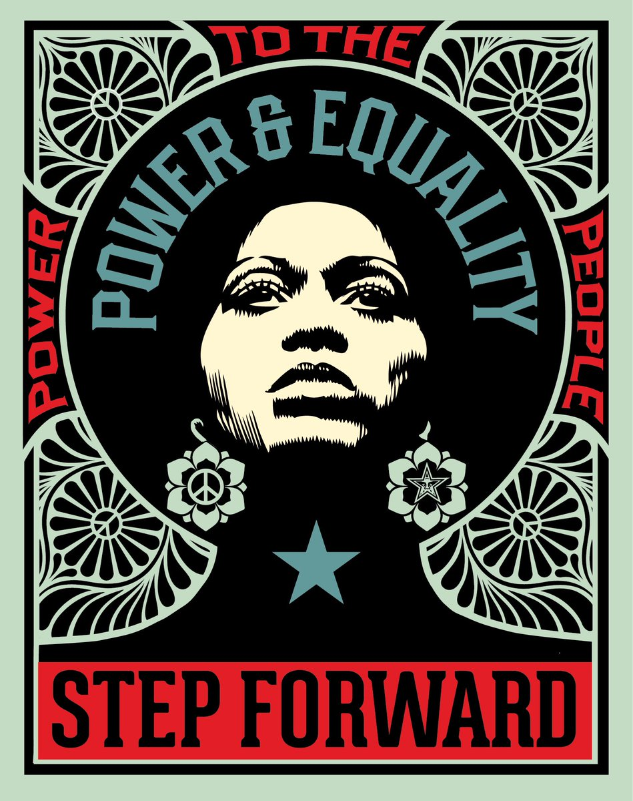

Lab 5: More HTML
Subject of the Lab
The subject of this lab is to use the skills we've learned so far to create a site with text and images. We'll also use brand new skills to add links and linked images to the page.
Summary and Difficulties
I started the lab by copying some of the code from other labs and pasting it into Lab 5. I noticed a mistake I had made in the other labs that instructions for this lab mentioned. I hadn't been customizing the title for the location bar when the site was open in a browser. So I went back to the other labs and fixed it. Then I placed two images and linked one of them to my website. I added another image and more text including a two links to other sites. I did face some difficulty when adding the link that returns the user to the homepage. I asked my partner if she knew how to fix it, but she didn't know. I went to Wes's homepage, inspected it, and was able to fix my mistake.
Results
Completing this lab felt really rewarding. I was able to combine everything I've learned so far to create an effective website. The process went pretty seamlessly as well.
These are a couple of design pieces that I made with Illustrator last summer. I am taking a Media Tools class, and I've been learning new skills since I haven't used Photoshop much before. I like to design things that reflect what I am interested in which is why I made a poster design for Phoebe Bridger's Punisher album and a coffee shop that I like to go to called Vertigo. I linked my website that I have been modifying for my other class that contains projects and assignments that I have been working on.
I recently watched a documentary about Shepard Fairley, the artist who founded OBEY. He is somewhat controversial, and his art is really political. But I really enjoyed the documentary and like the art he makes. I think it is really cool that he was able to merge his to passions, skateboarding and design, and become a very successful artist.
Other artists I have been enjoying lately are Terry Urban and SLEW. I follow Terry Urban on Instagram where he posts his art and sometimes videos of him creating it. I really like that he uses many different mediums, and his process is interesting to watch. I found SLEW through his youtube channel, where he talks about his life as an artist and gives tips on how to become a better drawer and painter.